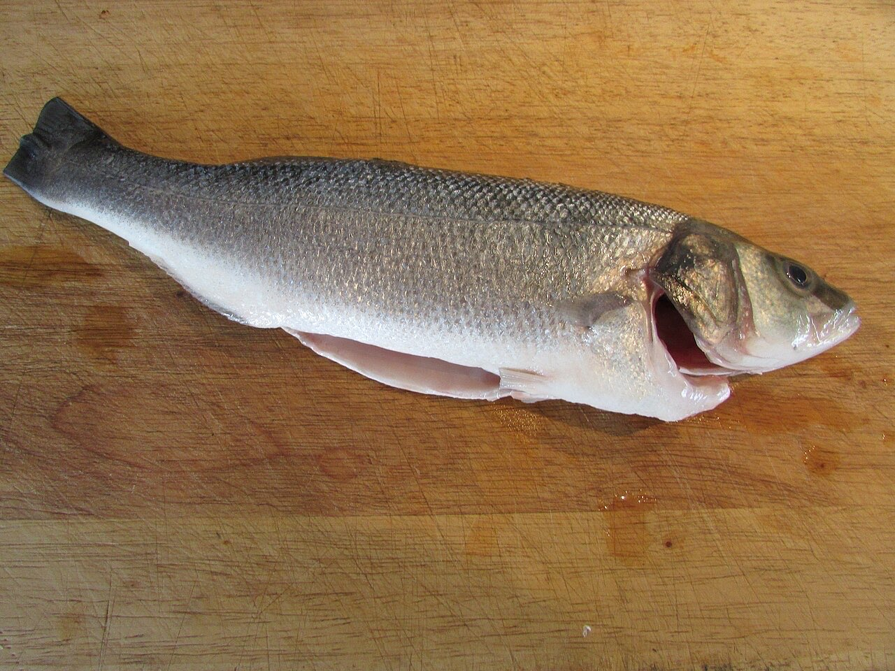
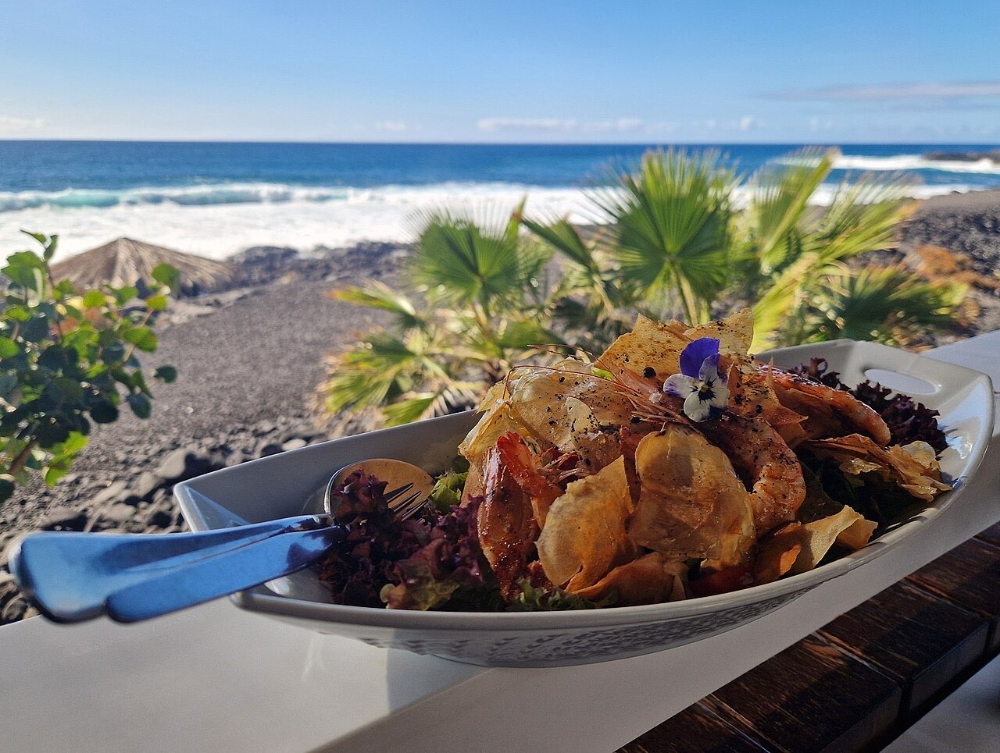
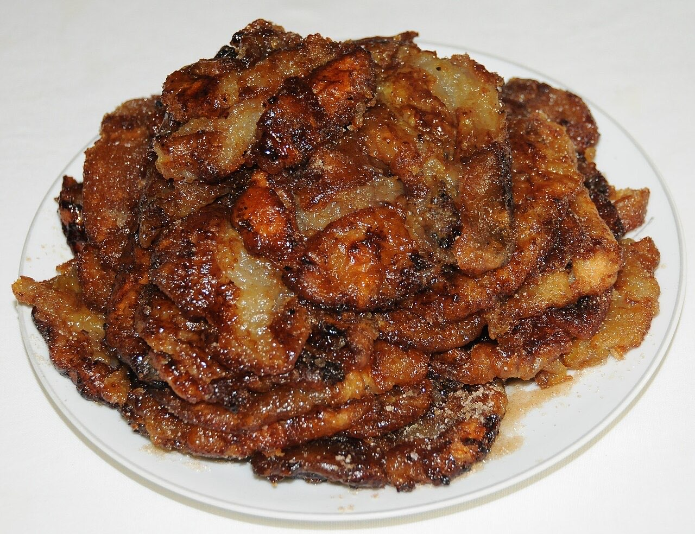

Restaurante · Guimarães
Peixe do dia, sugerido à mesa
Sardinhas, gambas, robalo grelhado e bacalhau.
Os pratos do dia são sugeridos à mesa.
Aconselhado, numa casa pequena e familiar.
O Cantinho do Fadista é uma casa pequena e familiar na Rua Dom João I, a poucos minutos do centro de Guimarães. Sem ementa impressa, os pratos do dia são sugeridos à mesa, com peixe e petiscos de peixe em destaque.



Fotografias ilustrativas — no site final usamos as vossas.
Pedido de reserva
Escolha o dia e a hora — o pedido chega por WhatsApp e confirmamos logo.
↑ Assim chegaria a mensagem ao vosso WhatsApp. (Nesta demonstração nada é enviado.)
Onde estamos
| Dom | Encerrado |
|---|---|
| Seg | 12:00–15:00 · 19:30–23:00 |
| Ter | 12:00–15:00 |
| Qua–Sex | 12:00–15:00 · 19:30–00:00 |
| Sáb | 19:30–00:00 |
Proposta para Cantinho do Fadista
Esta página foi feita de propósito para Cantinho do Fadista por João Machado, programador web aqui de Guimarães. Inclui:
Eu trato do alojamento e da manutenção. Sem compromisso.